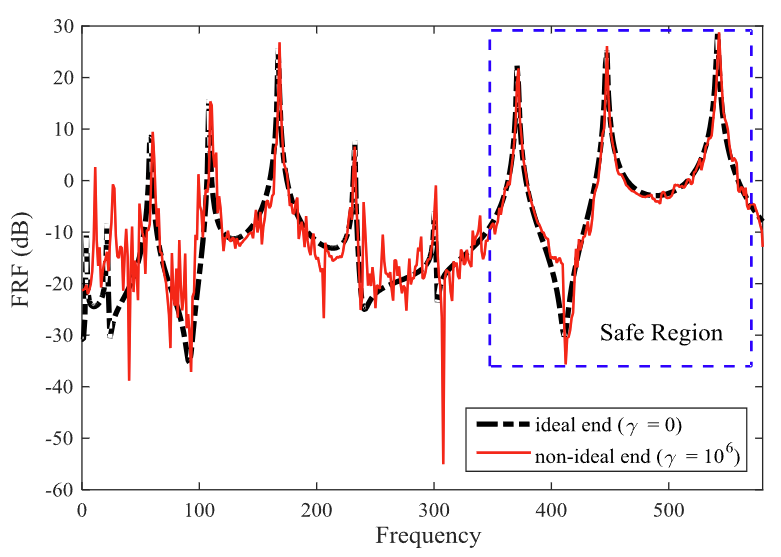

Influence of imperfect end boundary condition on the nonlocal dynamics of CNTs
Mechanical Systems and Signal Processing, 87, pp.124-135, 2017. Journal Article

Abstract
Imperfections that unavoidably occur during the fabrication process of carbon nanotubes (CNTs) have a significant influence on the vibration behavior of CNTs. Among these imperfections, the boundary condition defect is studied in this investigation based on the nonlocal elasticity theory. To this end, a mathematical model of the non-ideal end condition in a cantilever CNT is developed by a strongly non-linear spring to study its effect on the vibration behavior. The weak form equation of motion is derived via Hamilton’s principle and solved based on Rayleigh–Ritz approach. Once the frequency response function (FRF) of the CNT is simulated, it is found that the defect parameter injects noise to the FRF in the range of lower frequencies and as a result the small scale effect on the FRF remains undisturbed in high frequency ranges. Besides, in this work a process is introduced to estimate the nonlocal and defect parameters for establishing the mathematical model of the CNT based on FRF, which can be competitive because of its lower instrumentation and data analysis costs. The estimation process relies on the resonance frequencies and the magnitude of noise in the frequency response function of the CNT. The results show that the constructed dynamic response of the system based on estimated parameters is in good agreement with the original response of the CNT.